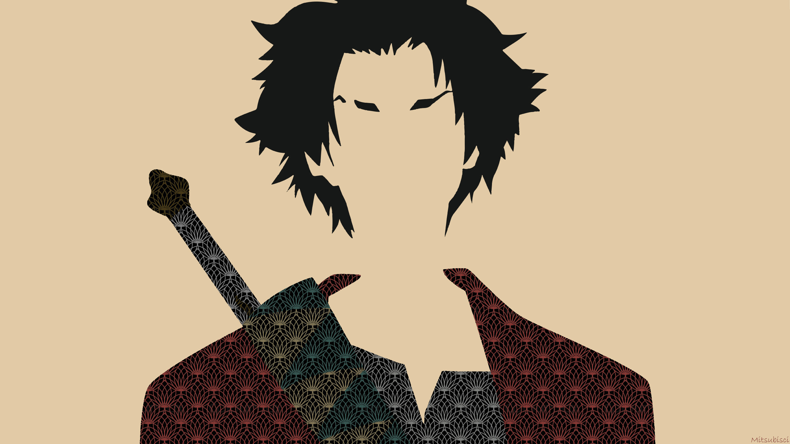
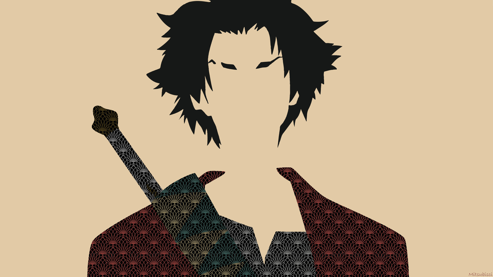

HERO SECTION
ヒーローセクション
Learn about the trio's unlikely alliance and their quest to find the "samurai who smells of sunflowers."Dive into the personalities and backstories of Mugen, the fiery rogue; Jin, the stoic ronin; and Fuu, the spirited girl holding them together.Discover how Nujabes' legendary soundtrack and the anime's innovative art style make Samurai Champloo a masterpiece.See how the show has influenced anime, music, and pop culture since its release.
 
